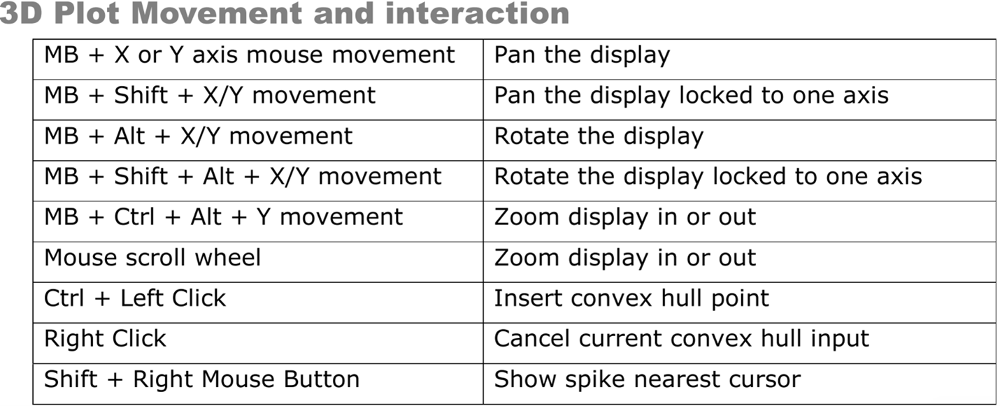

3 Spike sorting
We’ll cover how to spike sort using two programs: 1) Spike2 (written by Tony Lapsanksy), and 2) Neuralynx (written by Eric Press)
3.1 Spike2
Written by Tony Lapsansky, February 24, 2023
- Save the Spike2 file
- Use the name structure
YEARMODA_sequence_investigator - Save data in the corresponding directory
“C:\InvestigatorName\ephys\YEAR-MO-DA”
- Use the name structure
- Open
Spike2and open the file - Apply a digital high pass filter if needed. Note that if the data were
collected with the high pass filter set at greater than 100 Hz (no LFP
signal) then skip to step 4.
- Right click on channel and select
FIR Digital Filters…(see Spike 2 help → indexDigital Filterfor explanation) - Under the pull down menu for
Filterchange fromExample low pass filtertoExample high pass filter - Select the
Show Detailsbutton in the bottom right - Adjust blue slider to shift the colour dots above the slider from red to yellow to green, but use the minimum level to achieve green. Fine adjustments can be made just under the slider.
- Hit
Apply - Set
Destinationto the next available channel (often channel 4) - Click Okay
- Close the filtering window. You are given the option to save the filter. Do not do this. It is important to set the filter each time. (?)
- Right click on channel and select
- Set thresholds for spikes
- Right click on the filtered channel and select
New WaveMark - Clear previous templates if any are present. To do so, select the trash can icon within each template.
- Locate the dashed vertical line, which can be found at time 0 in the main window. This line indicates your cursor position.
- Move the dashed line through the trace to observe potential spike as determined by the default upper and lower thresholds.
- Right click the upper bound marker (the upper horizontal dashed line in
the
WaveMarkwindow) and selectmove away - Identify spikes based on the lower bound. It is usually helpful to zoom in on the x-axis (time) to do this. Set the lower bound so that obvious spikes are included and ambiguous spikes are excluded.
- Right click on the filtered channel and select
- Choose template setting
- Move the cursor to a typical spike. The upper window is a base template. Click and hold on the upper trace and drag it to the first available template window.
- Click on the button just to the left of the trash can icon (on the top
half, upper right of the
WaveMarkwindow). This is the “parameters dialog” button. This opens a template settings window. - For the line
Maximum amplitude change for a matchenter20. This will allow a spike that fits a template to vary in maximum amplitude by up to 20%. - For the line
Remove the DC offset before template matching, confirm that the box is checked. - Nothing else should need to be changed. Click
OK.
- Spike sorting
- Back in the
WaveMarkwindow, make sure that the boxCircular replayis unchecked, and that the boxMake Templatesis checked. - Ensure that the vertical cursor on the main window is at time zero (or the first spike).
- Hit the play button ▶️, which is called “run forward”. This will take several minutes.
- Back in the
- Use PCA to delete and merge spike templates
- Select
New Channelon theWaveMarkwindow to place the spike data in the next available channel (typically, Channel 5) - Close the
WaveMarkwindow. - Right click on the sorted channel and select
Edit WaveMark - Within the
WaveMarkwindow, go the pull down menuAnalyseand selectPrincipal components. SelectOK. This opens a window of all spikes colored by template. - Rotate around all three axes to determine if there is one, two, or more clusters.
- Identify templates that should be deleted and those that should be merged. Delete templates that sparse and peripheral.
- Delete the template(s) in the
WaveMarkwindow by selecting that template’s trash can icon. - Merge templates by dragging them into the same window
- Hit the
reclassifybutton in theWaveMarkwindow.
- Select
- Export the spike-sorted data
File → Export As- Select
.mat(Matlab data) - Use the same filename and location but with the .mat extension.
- Hit
Save - Select
AddforAll Channels - Click
Export - Click
OK(this will take several minutes)
3.2 Neuralynx
Written by Eric Press, November 11, 2022
Spike sorting database:
- Check the column labelled
Sorting statusto find days of recording that arecuedmeaning they are ready to be sorted. Recordings are cued for spike sorting once information about the recording has been added to the database. This includes observations from the day’s recording, whether the electrode position was moved from the previous recording, and the stimulus condition for each recording. The recordings are stored at the following location and are named/organized by date and time of recording:
Computer/LaCie (D:)/Eric’s data/nlx_recordings
- Check the column labelled
Filtering the raw traces (CSCs):
Use the
NlxCSCFilteringtool on any Windows machine to run a band-pass filter on inputCSCfiles.Choose all the
CSCfiles for a given recording, change thePreAppendfield tospfilt, which stands for spike-filtered and adjust theDSPfiltering fields to match the image to the right. This selects for frequencies in the raw traces where spikes will be found, but removes low frequency (LFP) and high frequency components of the traces.
Nix csc filter
Examine the filtered traces:
- Take a closer look at the filtered traces (Open in
Neuraviewon any Windows machine) and determine which channels are likely to have isolatable spikes and how many distinct spikes there might be. It helps to keepNeuraviewopen when setting thresholds in the next step.
- Take a closer look at the filtered traces (Open in
Spike detection from filtered traces:
Use the
CSCSpikeExtractortool on any Windows machine to detect spikes above or below a given µV) threshold. The units displayed in the program will be AdBitVolts which are simply 10.92x from the µV value.Based on the filtered traces, within
CSCSpikeExtractor, set the spike extraction properties (Spike Extraction -> PropertiesORCtrl+P) as shown above. TheExtraction Valueis set to 10.92x the µV you chose by viewing the filtered traces.Press
Ctrl+Sto extract spikes from the selected file at the desired settings. The resulting file will be placed in theextracted spikesfilter on theDesktop.Create subfolders in the recording folder for each threshold and move the extracted spikes at each threshold into the appropriate folder. These spike-detected files will be used for spike sorting in the next step.
If it helps with detecting real spike waveforms while eliminating noise, run recordings through spike detection at multiple threshold (positive or negative) such that only all putative neurons are accounted for a minimal noise is detected.

Spike extraction properties
Spike sorting:
Open the extracted spikes in
Spikesort3Don either the Neuralynx machine or another Windows machine that has an activeSpikeSort3Dlicence. You can also useTeamViewerto control the Neuralynx machine but this works much better with another Windows machine.Press OK when the feature selection window appears. If you want to select alternate features to display, select them from the list provided. Sometimes it can be helpful to use PCA1 – 3 in isolating neurons but often it makes things more challenging.
Using the 3D Plot, examine the clustering of spikes. Follow the image below to aid in interacting with the 3D plot (MB = the scroll wheel button i.e. middle mouse button). You can change the features displayed on each axis with
Q/W,A/S, andZ/Xrespectively. Also,Ctrl+Pbrings up a window that allows you to change the size and opacity of points on the plot (I findsize = 2,alpha = 0.5works well to improve visual definition of the clusters). If distinct clusters are difficult to see, find the combination of 3 features that produces the most noticeable clustering or the greatest spread of points in the space. The features displayed in the 3D plot are shown at the top left of the plot (i.e. X(3) Height # # # #). Use those features for the next step. Run
KlustaKwik(Cluster → Autocluster using KlustaKwik) and select the 3 features that generate the most clearly separable clusters on the 3D view – often, the first 3 (Peak,Valley,Energy) do a decent job. Change theMaxPossibleClustersto10before pressingRun. The remaining settings should match the image below.
Following calculations, use the
Waveformwindow and the 3D plot to group the distinct clusters into what you believe are waveforms produced by distinct neurons. Use the number keys to highlight distinct clusters andCtrl+Mto merge clusters together.Ctrl+Ccopies the selected cluster and can be used to split a cluster into 2 if you believe portions of the cluster belong to distinct putative neurons. This step takes some practice. You can useCtrl+Zto undo only one move. Otherwise, you may need to exit without saving and start again at step 4. Save withCtrl+Soften and click OK to overwrite the file.Once you are satisfied with the waveforms left, note how many there are, and whether it seems possible that some of the groups belong to the same neuron. Consider what you know about excitable membranes to make these decisions. Fill out the
Spike Sorting Databasewith the information used to reach this point. This includes, the threshold(s), # of clusters, # of putative neurons (often 1 less than the # of clusters because it would be a stretch to include the smallest amplitude waveform as a distinct, separable neuron), and any else to note from performing sorting.Save each cluster to its own spike file (
File → Save Multiple Spike Files)Open the separate spike files you just created, along with the original filtered trace in
Neuraview. Scroll along the recording and examine if the sorting you performed seems believable. Do the spikes in different rows really seem like they’re different in the filtered trace? Do some spikes not seem like real spikes? If anything seems amiss, make the appropriate merges inSpikeSort3Dbefore proceding.Export the relevant data from the sorting. Perform the following:
File → Save ASCII Timestamp FilesFile → Save Multiple Spike FilesFile → Save ASCII Avg WaveformsAlso, save the file itself with
Ctrl+S
Lastly, bring up all the waveforms together on the waveform plot. Take a screenshot and save it to the folder where the extracted spikes (and now timestamps files) are stored.
Moving sorted files to other locations:
Once a chunk of recordings have been sorted, copy/paste the entire recording file to Eric’s orange 1TB storage drive (Lacie). Place them in the following folder:
Eric's data/sorted_recordings